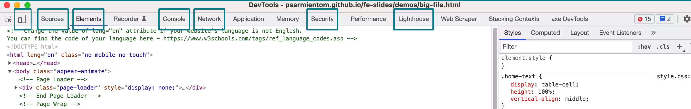

Developer Tools
One of the main duties of a Front End Developer is to monitor Web Performance.
User expect Fast loading sites at all times regardless of the device used.
Web Performance
- Performance is all about creating the best user experience in the least amount of time.
- The main goal is to reduce overall load time.
- Better performance means better rankigns, less hosting expenses, and better user experience.
- Page load speed should be kept under 3 seconds.
Which factors affect Web Performance?
Server Related
- Server Age.
- http/1 loads elements in sequence.
- http/2 can load multiple elements at the same time.
- Connection type.
- http / https.
Page Related
- Images.
- Javascript.
- External Web Fonts.
Image Formats for the Web
JPG
- A compressed image format standardized by the Joint Photographic Experts Group (JPEG).
- It significantly reduces the file size of images.
- Good for photographs.
- Some information is lost in the process.
PNG
- Image file stored in the Portable Network Graphic (PNG) format.
- Commonly used to store web graphics.
- Bigger image size than jpg.
- Use png if you need to support Transparency on an image.
GIF
- GIF Stands for Graphics Interchange Format.
- Does not degrade the image quality.
- Better suited for buttons and banners that do not require a lot of colors.
- Animated GIFs can take a lot of space because each frame needs to be processed as a single image. Use video instead.
SVG
- SVG stands for Scalable Vector Graphics.
- Images are scalable.
- Graphics do NOT lose any quality if they are zoomed or resized.
- Elements can be styled with CSS.
- Very small file sizes.
WebP
- The WebP format was developed by Google to overcome the limitations of JPEG.
- WebP images are at least 30% smaller than JPGs.
- It supports transparency.
- You need to provide a fall-back for older browsers.
How do we measure Web Performance?
Chrome Developer Tools

- Elements Tool: Inspects the DOM and CSS.
- Console: View logged messages or Run Javascript.
- Network: See hoy your resources load.
- Device Simulator: See how your page loads in different devices.
- Security: Information about the https status.
- Lighthouse: Generates a Performance Report.
Git and Github
The Global Information Tracker
Git
- Git is a Version Control system, designed to track changes on files.
- It's meant for collaboration.
- It is a distributed system, so everyone working on a project has access to all files and versions.
- Git is a TOOL
Github
- Github is an platform where you can upload a copy of your Git repo.
- Since it's web based, it makes it easier to collaborate.
- Github is a SERVICE
You can use git without Github, but you cannot use Github without Git.
Why Git?
- You can undo changes.
- You always keep the full history of all the changes.
- Commit comments allow you to see why a change was made.
- Freedom to make changes.
- The ability to create branches and work on additional features independently.
- Multiple people can work on the same file.
- Github is more than a place where to store your files. It allows you to collaborate, document, track changes and progress in one place.
Master Branch and Branches
Do I have Git Installed on my computer?
- If you are on a Mac, it is pre-installed.
- If you are on a windows computer you need to install it.
- You can check by typing:
git --version on the terminal.
The Command line_
- The Command line is a text-based application for manipulating files on your computer.
- You can install software, create/delete/move/rename files, and many other things.
- Other names for the command line are: cmd, CLI, prompt, console or terminal.
- Most commands are the same for Mac and Windows, but there are differences.
- To open on Mac search for "Terminal", on windows Run "cmd".
- When you open the terminal it will place you at the root of your user.
- Mac:
username@Computer0Name ~ %. This is called the prompt.
- Windows:
C:\Users\username.
Basic Command lines
cd dirName Change Directory- Mac:
pwd Windows: cd Current Directory or Print Working Directory
- Mac:
ls Windows: dir List Directory
- Mac:
mkdir dirName Create a new directory (folder)
cd .. Change directory to the parent.- Mac:
rm -r dirName Windows: rmdir /S dirName Removes the file permanently.
mv ~/Downloads/MyFile.txt ~/Documents/Work/MyFile.txt Moves files.cp -R ~/Documents/Expenses /Volumes/Data/Expenses Copy files.
Git Key Concepts
- Master Branch: It's the original version of your project, and the final one when you have merged all the branches.
- Branch: Is an alternate version of your repo where you can try new features without affecting the original code. You should always create a Branch and work on it.
- Commit: Is a snapshot or checkpoint of your repo at a given time. Commits are done locally
- Commit Message: Every time you commit, you need to supply details on why the change was made.
- Pull/Push: Pull grabs changes from Github to your local copy. Push sends the committed changes to Github.
- Merge: Incorporating changes made on a branch into the Master or another branch.
- Clone: Downloading a copy of a project to work on it locally.
- Fork: When you copy a project you don't have permission to make changes to work on it.
Basic Git Commands
Git Cheat Sheet. |
Another Cheat Sheet. |
Visualizing Git.
mkdir dirName Creates a directory for your project.git init initialize your Git project.touch filename Creates a file in your directory.git status Tells you whether the file has been added to the working directory.git add Adds the project to the staging area.git status Check the status of the file.git commit Moves the file from the staging area to the current version.git log Gives you information of the status of the commits.